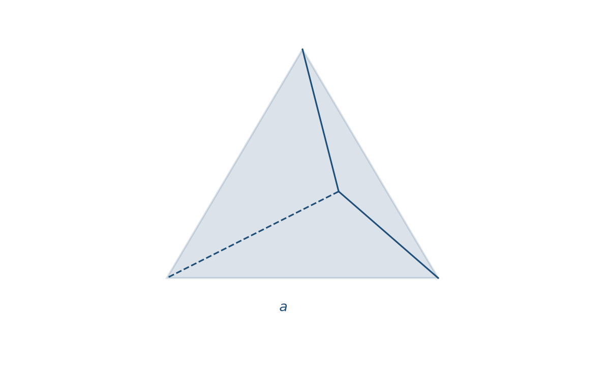
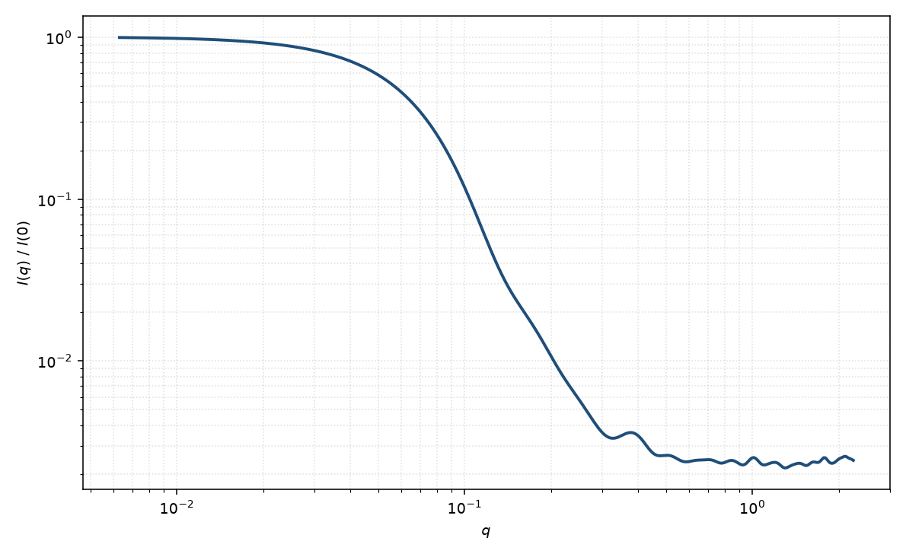

四面体
tetrahedron
适用场景
正四面体均匀粒子：四张等边三角形面、六条等边。适用于四面体量子点、部分 II–VI 纳米晶，以及胶体晶的四面体构筑单元。
相对球，同样 $R_g$ 下高 $q$ 振荡更浅，面法向与棱给出不同的渐近。圆角或截去顶点时应改用截角四面体；若只是略扁的等轴体，旋转椭球参数更少、更稳。
物理图像
任意多面体的振幅可由顶点坐标与面拓扑的闭式给出（Croset；Wuttke），再对取向平均。正四面体体积 $V=a^3\sqrt{2}/12$，回转半径 $R_g^2=3a^2/40$。
示意图 $I(q)$ 用体内均匀抽样的各向同性 Debye 求和，等价于粉末平均的 $|F|^2$。截去顶点会把尖锐的面/棱特征变钝，并改变体积标度。
示意图


核心公式
出发点
稀释、取向无规的均匀粒子，相干散射振幅是特征函数的傅里叶变换
$$F(\mathbf{q})=\Delta\rho\int_V \mathrm{e}^{i\mathbf{q}\cdot\mathbf{r}}\,\mathrm{d}^3r.$$正四面体 $V$ 由四张等边三角形面围成。边长 $a$ 时体积 $V=a^3\sqrt{2}/12$，$F(\mathbf{0})=\Delta\rho V$。
推导
因 $\nabla\cdot(\mathbf{q}\,\mathrm{e}^{i\mathbf{q}\cdot\mathbf{r}})=i q^2\mathrm{e}^{i\mathbf{q}\cdot\mathbf{r}}$，散度定理把体积分降到面上：
$$\int_V\mathrm{e}^{i\mathbf{q}\cdot\mathbf{r}}\,\mathrm{d}^3r=\frac{1}{i q^2}\sum_f(\mathbf{q}\cdot\hat{\mathbf{n}}_f)\int_{S_f}\mathrm{e}^{i\mathbf{q}\cdot\mathbf{r}}\,\mathrm{d}S.$$每张面是平面多边形。面上 $\nabla_\parallel\cdot(\mathbf{q}_\parallel\mathrm{e}^{i\mathbf{q}\cdot\mathbf{r}})=i q_\parallel^2\mathrm{e}^{i\mathbf{q}\cdot\mathbf{r}}$，再把面积分化为边积分。直边上相位线性，积分就是 $\mathrm{sinc}$。令 $\hat{\boldsymbol{\nu}}_j$ 为该边在面内的外法向、$\mathbf{L}_j$ 为边矢、$\mathbf{c}_j$ 为中点，
$$f_f(\mathbf{q})\equiv\int_{S_f}\mathrm{e}^{i\mathbf{q}\cdot\mathbf{r}}\,\mathrm{d}S=\frac{1}{i q_\parallel^2}\sum_{j\in\partial f}(\mathbf{q}_\parallel\cdot\hat{\boldsymbol{\nu}}_j)|\mathbf{L}_j|\,\mathrm{e}^{i\mathbf{q}\cdot\mathbf{c}_j}\,\mathrm{sinc}\!\left(\frac{\mathbf{q}\cdot\mathbf{L}_j}{2}\right).$$$q_\parallel\to 0$ 时 $f_f\to\mathrm{Area}_f\,\mathrm{e}^{i\mathbf{q}\cdot\mathbf{r}_f}$。四面体有 4 面 $\times$ 3 边，代入即得闭式 $F(\mathbf{q})$。粉末平均等价于 Debye 双重体积分（图中 $I(q)$ 用此求值）：
$$P(q)=\frac{\langle|F|^2\rangle_\Omega}{|F(\mathbf{0})|^2}=\frac{1}{V^2}\int_V\int_V\frac{\sin(q|\mathbf{r}-\mathbf{r}'|)}{q|\mathbf{r}-\mathbf{r}'|}\,\mathrm{d}^3r\,\mathrm{d}^3r'.$$稀释 $I(q)=n(\Delta\rho)^2 V^2 P(q)+B$，拟合里常把前置因子收成 $\mathrm{scale}$。
低 $q$ 与渐近
均匀体 $P=1-q^2 R_g^2/3+O(q^4)$。正四面体对质心的二阶矩给出闭式 $R_g^2=3a^2/40$，故
$$P(q)=1-\frac{q^2 a^2}{40}+O(q^4).$$外接球半径 $R_{\mathrm{cir}}=\sqrt{6}\,a/4$，因而 $R_g=R_{\mathrm{cir}}/\sqrt{5}$。Guinier 指数形式在 $qR_g\lesssim 1$ 可用。
大 $q$ 尖锐面给出 Porod $q^{-4}$；棱与顶点产生更弱的 $q^{-5}$、$q^{-6}$ 修正，并把振荡相对球抹浅。第一极小不再对应 $\tan x=x$。
参数表
| 参数 | 符号 | 含义 | 单位 | 典型范围 |
|---|---|---|---|---|
| 边长 | $a$ | 正四面体棱长 | Å 或 nm | 15–800 Å |
| 欧拉角 | $\theta,\phi,\psi$ | 面/棱相对光束的取向（二维） | 度 | 由取向分布约束 |
| 衬度 | $\Delta\rho$ | 均匀体相对溶剂 SLD 差 | Å$^{-2}$ | 组成决定 |
| 标度 / 本底 | $\mathrm{scale}$, $B$ | 前置因子与本底 | 与强度单位一致 | 实验相关 |
拟合注意
边长多分散强烈抹平高 $q$ 振荡，且与“等效球 + 高多分散”在一维上易混淆。有电镜确认四面体形貌后再放开 $a$ 的分布宽度。
取向：溶液中粉末平均；衬底或磁场下四面体会以面或棱择优，二维出现三重/四重特征，不能用球的平凡取向。磁性：磁死层常沿 {111} 面，磁有效边长可小于核边长；核磁 SLD 分通道。
相近模型
参考文献
- Croset, B. Form factor of any polyhedron: a general compact formula and its singularities. J. Appl. Cryst. 2017, 50, 1245–1255. DOI: 10.1107/S1600576717010147
- Wuttke, J. Numerically stable form factor of any polygon and polyhedron. J. Appl. Cryst. 2021, 54, 580–587. DOI: 10.1107/S1600576721001710